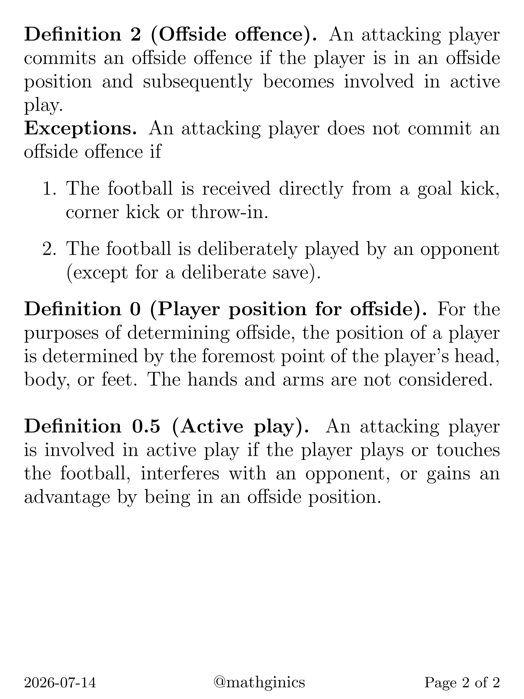
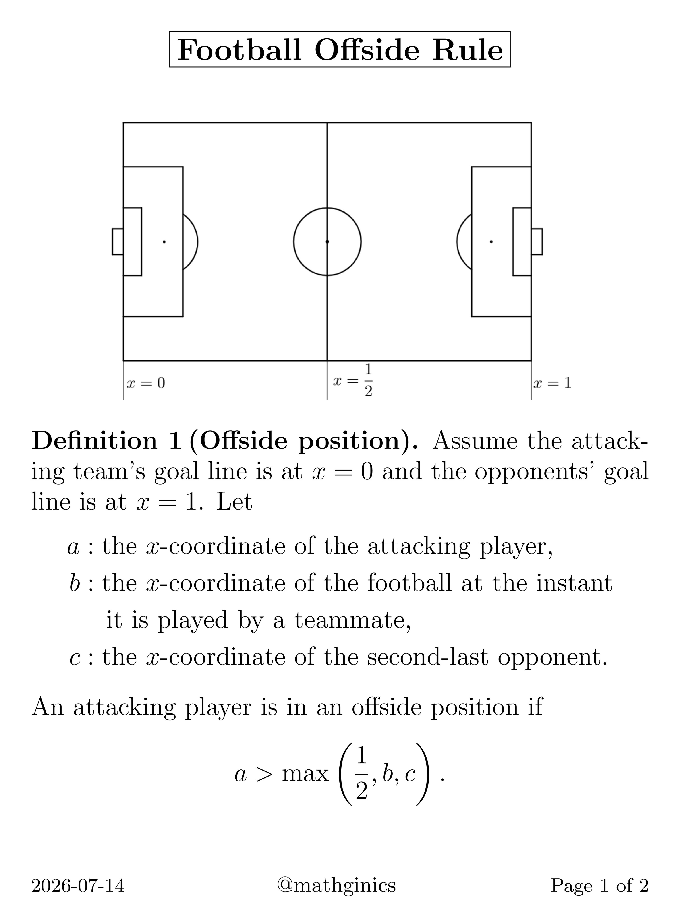

referees
July 2026
can we get rid of them completely?
watching the world cup this summer has had me thinking about this. VAR was supposed to fix things, but it's created its own set of complaints - slow, inconsistent, still subjective.
this post from @mathginics is a good example of what algorithmic refereeing could look like:


an attacking player is in an offside position if a > max(1/2, b, c), where a is the attacker's x-coordinate, b is the ball's position when played, and c is the second-last defender's position. this is exactly what the offside rule already says - just written as a formula.
VAR already does something close to this, but the implementation is inconsistent and the "active play" clause introduces subjectivity again. the base offside call should just be automatic.
the harder question is active play - interfering with an opponent, gaining an advantage. that's much harder to formalise. but things like whether a ball crossed the line, whether a foul occurred based on contact and direction, whether a player was offside - these could plausibly be algorithmic with enough sensor data.
the handball rule is a mess because intent is uncodifiable. but that's actually an argument for getting rid of that rule, not for keeping human referees.
i don't think referees disappear entirely. the judgement calls that require context, intent, reading the situation - those stay human. but a lot of what causes the biggest controversies is stuff that should just be maths.